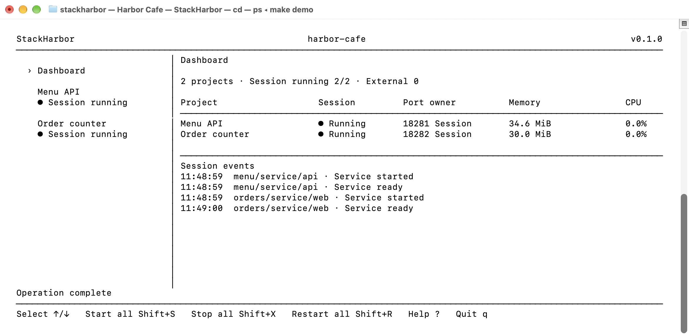
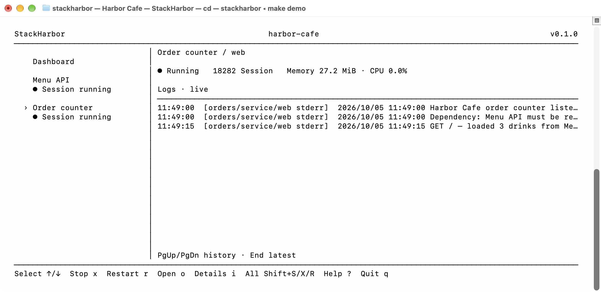

Run make demo, then press Shift+S. Menu API serves three drinks; Order counter waits for the API to be ready, then loads its menu. These are real macOS Terminal screenshots of the bundled example.

The sidebar selects projects. The vertical divider stays visible without a sidebar background. Session running 2/2 indicates two services started by this session. Port owner shows listener ownership; Session events records dependency startup order.

Select Order counter with ↓. Visit http://127.0.0.1:18282/ to load the menu and generate a request log. Press i for details, o to open the service, Home for the dashboard, and q to stop session-owned processes and exit.